Popup-Menu Functions#
Missing
Not all menu options have been documented yet
Edge and Lane#
- Split edge here: Split an edge into two different edges connected with a junction.
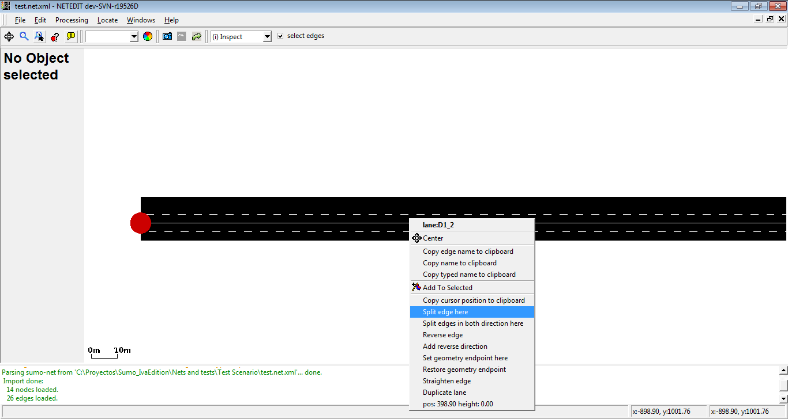
Edge is splitted in the mouse cursor position
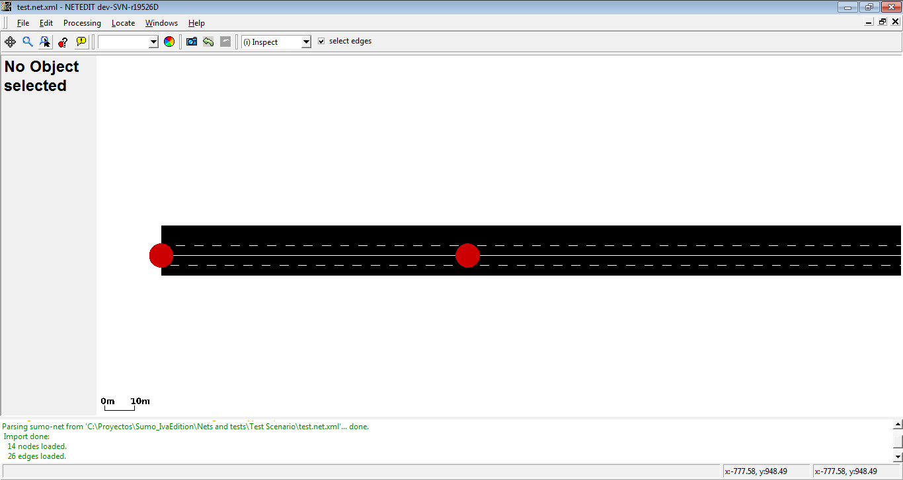
New edges are connected by a new junction
- Split edge in both directions here: Is similar to Split edge here, but generate splitted edges in both directions.
- Reverse edge: Reverse the direction of an edge. If the ID of the start and end junctions of edge are respectively A and B, after this operation start and end junction will be B and A.
- Add reverse direction: If don't exist, add a revere edge between two junctions
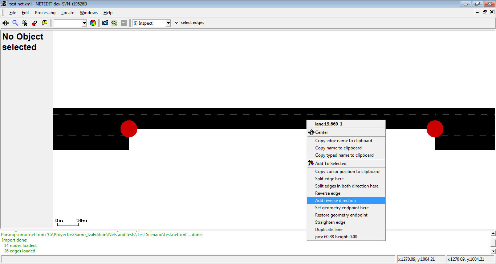
In this case, a direction from right to left will be created
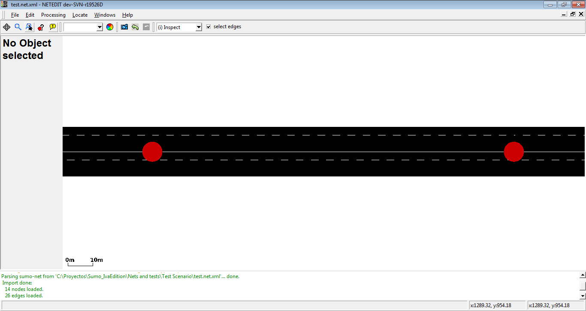
New edge is parallel to their reverse edge
- Set geometry endpoint here: Create an geometry end point. It's useful to mark the start and the end of an road
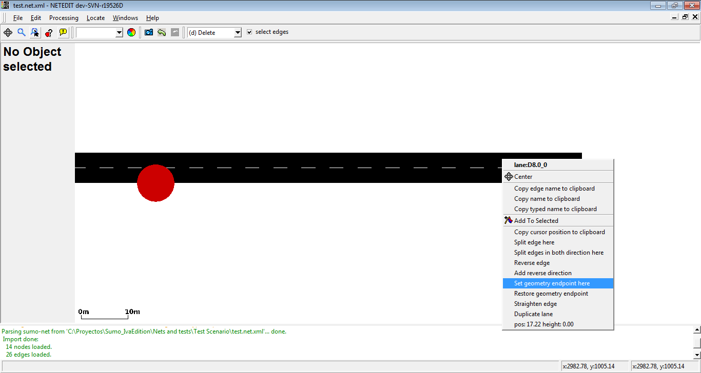
Geometry endpoint will be created in the mouse cursor position
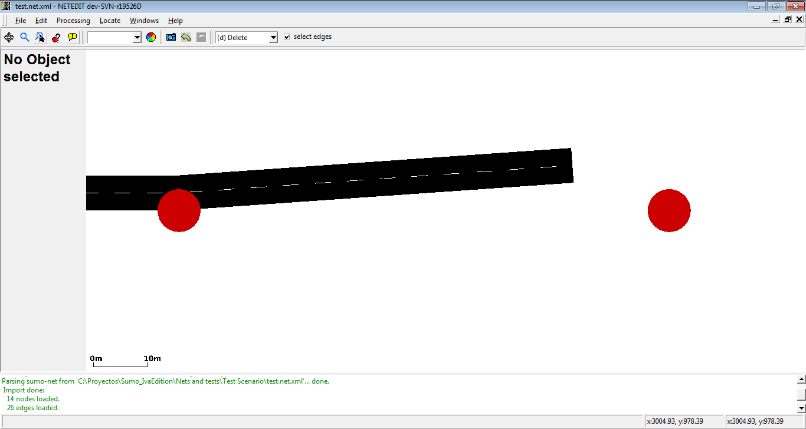
There isn't an visual connection between end point and their end junction
- Restore geometry endpoint: Restore a geometry endpoint to a normal edge
- Straighten edge: Allow to restore the visual shape of an edge
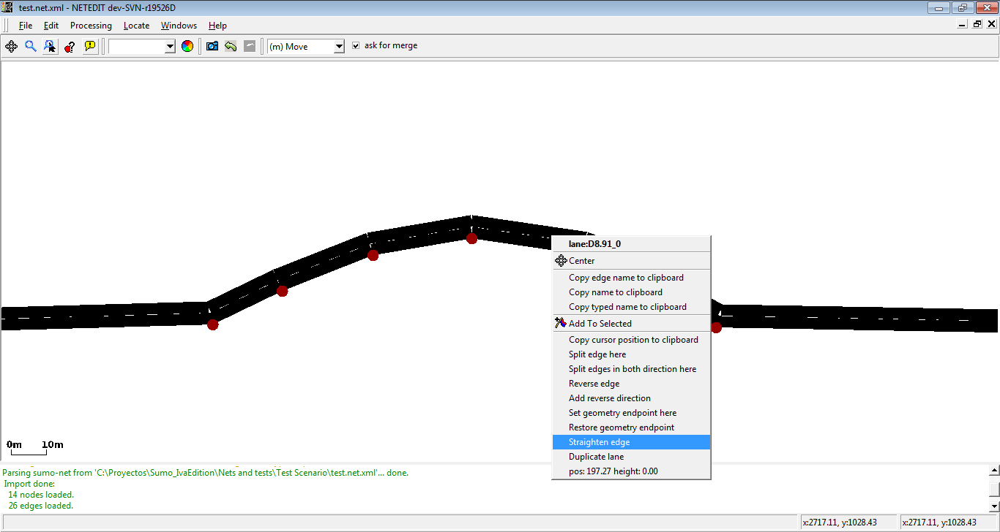
With the operation move visual shape of an edge can be modified
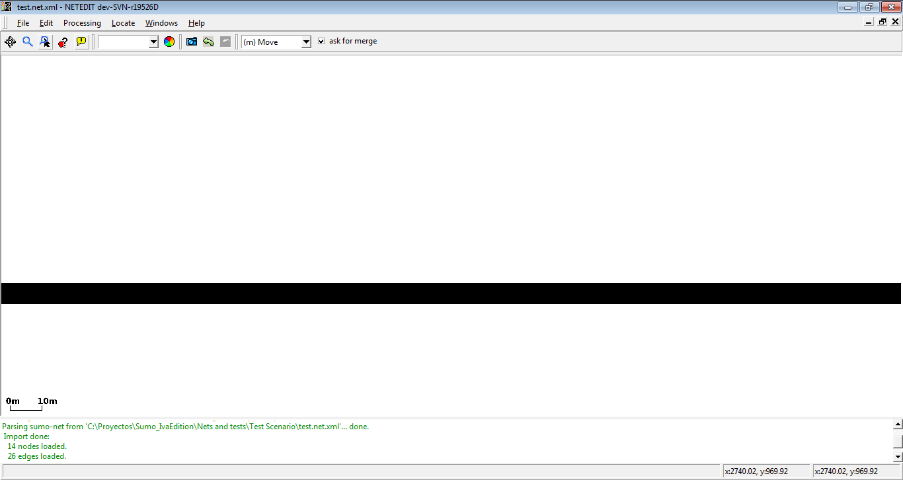
Straighten edge restore the original shape of an edge
- Duplicate lane: duplicate a lane of an edge
Restricted lanes#
Restricted lanes for particulars vehicle class (VClass) can be easily added in inspect mode. Currently netedit supports sidewalks (where only vehicles with VClass="pedestrian" are allowed), bike lanes (where only vehicles with VClass="bike" are allowed), and bus lanes (where only vehicle with VClass="bus" are allowed). Note that only one type of restricted lane is allowed in every edge (For example, an edge can own two restricted lane, one for buses and another for bikes, but not two or more different restricted lanes for buses.
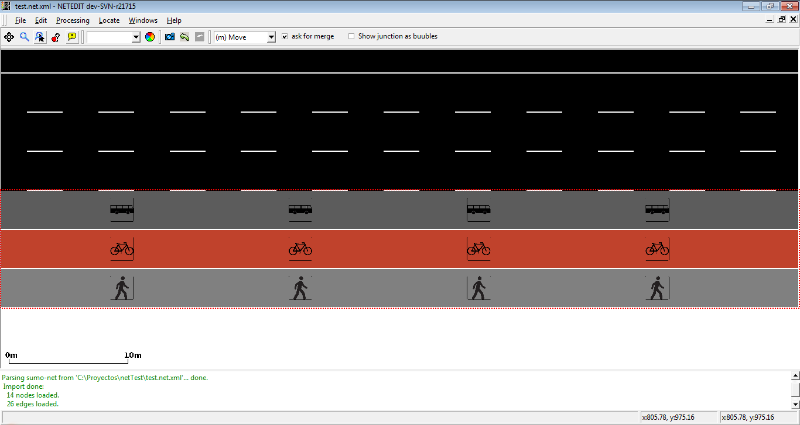
Example of edge with three restricted lanes
There are two ways to add a restricted lane, either transforming a existent lane or adding a new restricted lane
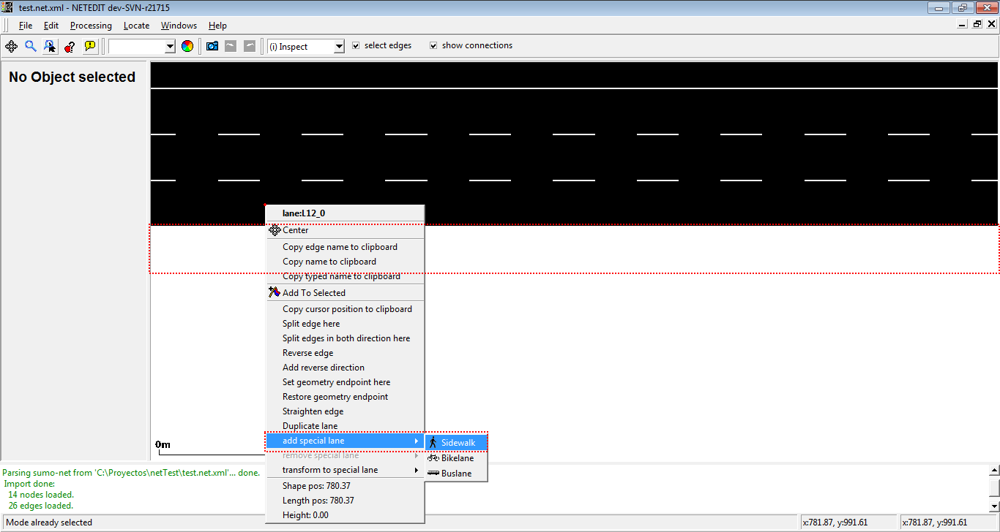
Adding a sidewalk using "add restricted lane"
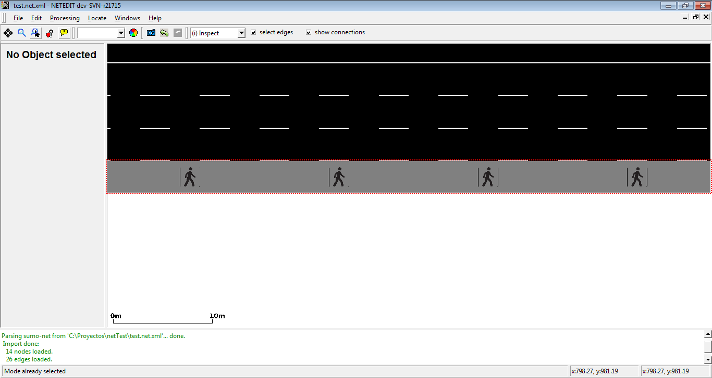
Sidewalk added
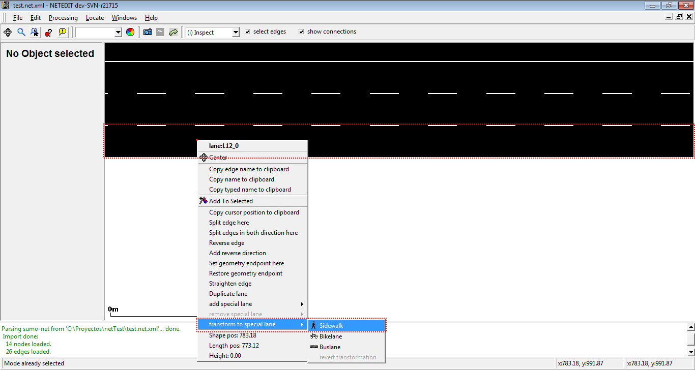
Adding a sidewalk using "transform to special lane"
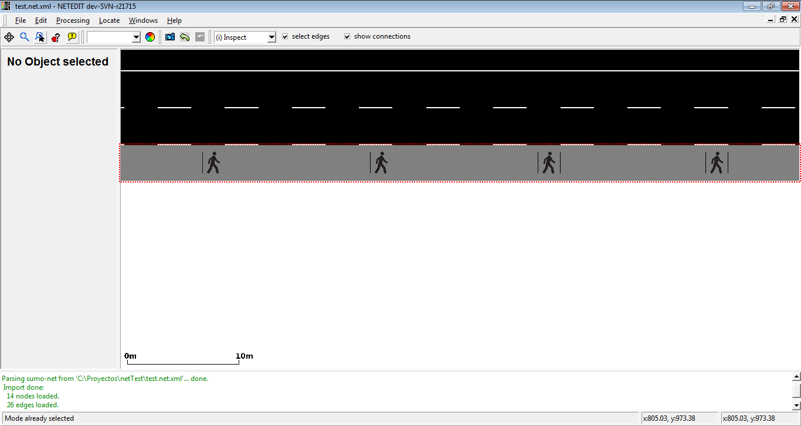
Lane transformed to a sidewalk
A restricted lane can be transformed in a normal lane with the option revert transformation, or can be removed with the option Remove restricted lane
Junction#
- Split Junction: Undo a prior join (i.e. one that was computed with option --junctions.join)
- Set custom shape: Allows drawing a custom junction shape via a Modifiable Poly (see below). The junction shape determines where the incoming edges end and the outgoing edges start. If the automatic generation of shapes does not give a satisfying result it often helps to draw a custom shape instead. The shape is a polygon defined by a sequence of (x,y,z) geometry points.
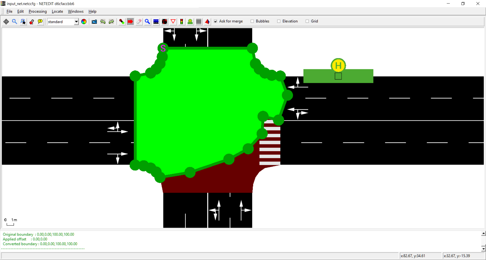
Editing junction shape
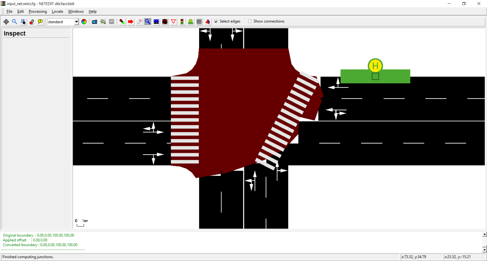
Junction after editing shape
Connection#
- Set custom shape: Allows drawing a custom connection shape via a Modifiable Poly (see below). The shape is confirmed with <Enter>.
Crossing#
- Set custom shape: Allows drawing a custom crossing shape via a Modifiable Poly (see below). The shape is confirmed with <Enter>.
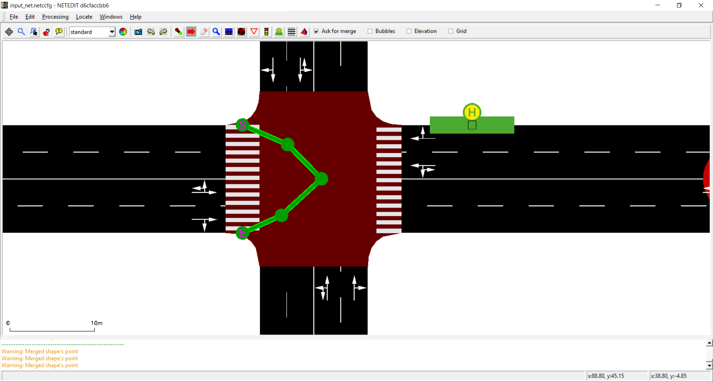
Editing crossing shape
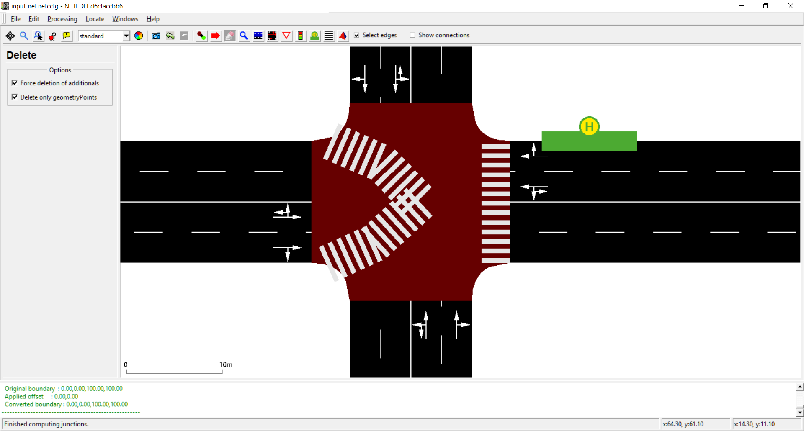
Crossing after editing their shape
Modifiable Poly#
- Set custom shape: Apply this shape to the current junction
- Discard custom shape: Abort editing the current junction shape
- Simplify shape: Replace the current shape by a rectangle
- Remove geometry point: Remove the closest geometry point from the shape
- The new shape is confirmed with the <Enter> key and discarded with <Esc>.
The green polygon outline allows adding and moving geometry points by left-clicking anywhere on the outline and dragging. Shift-clicking a geometry point deletes it.
Additionals#
- inner/lane position: Additionals that are placed over an edge or lane haven two different mouse position. Inner position is the position of the mouse with respect to the length of the additional, and lane position if the position of the mouse with respect to the length of lane
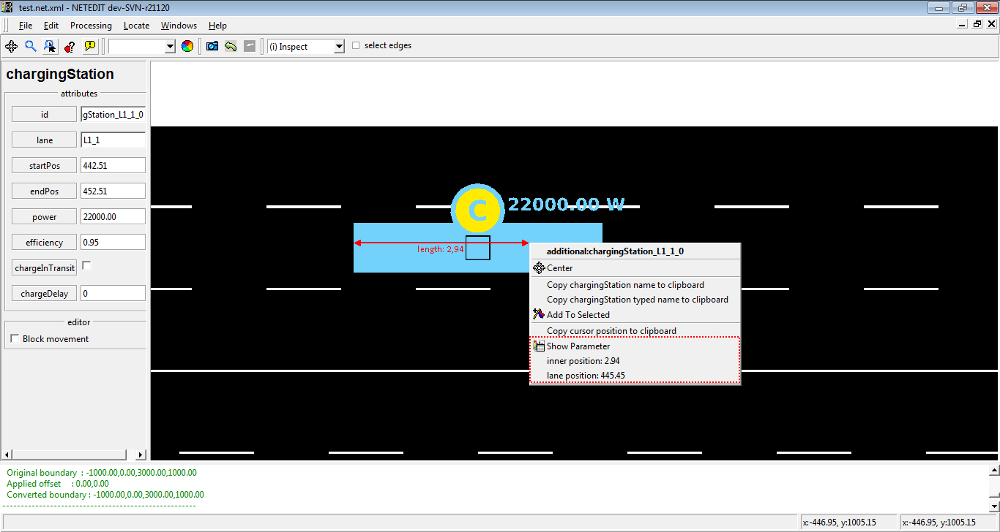
Position's parameter of Charging Station
- Position in view and number of childs: shows the number of childs that own an Additionals, and their position in view

Position and childs of a E3 Detector
- show parameters: show all parameters of additional.
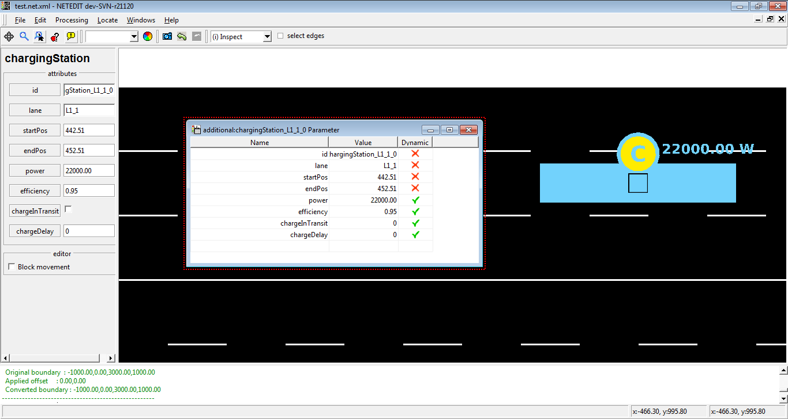
Showing of parameters of charging Stations
Route#
- Apply distance along route: Sets the 'distance' attribute of all edges along the route for linear referencing. The distance attribute value of the first edge in the route is take as the start and the remaining edges are assigned a distance value that is counting upwards along the route. If the distance value should decrease along the route, the first edge must have a negative distance value.